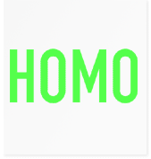
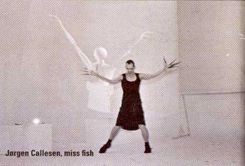

| November 2003 |
| SAKSET HOMO | |
| Dialog: | redaktion@panbladet.dk |
| Fotos: | Privatfotos fra HOMO |
Panbladet har kigget i HOMO inden bogen kommer på gaden midt i november. Vi har sakset lidt i billeder og stemmer fra bogen.


Jørgen Callesen, 37, Phd. studerende/performer, København.
Print denne side